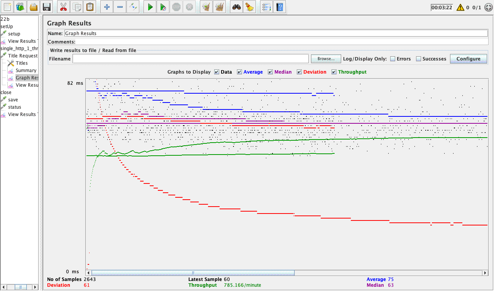
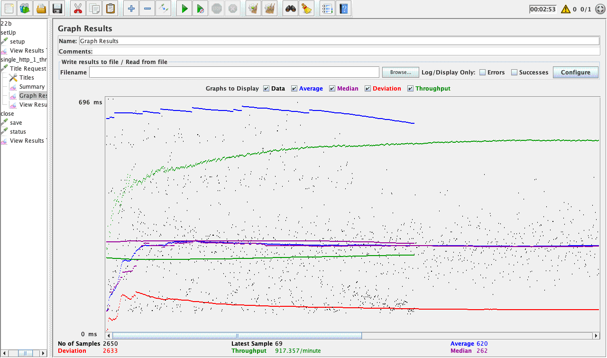
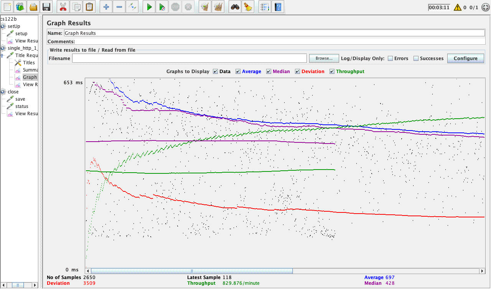

| Single-instance version cases |
Graph Results Screenshot |
Average Query Time(ms) |
Average Search Servlet Time(ms) |
Average JDBC Time(ms) |
Analysis |
| Case 1: HTTP/1 thread |
 |
75 |
[26.162488] |
[26.158777] |
This finished in a reasonable time because there is only 1 thread requesting and using all resources, no locking will occur |
| Case 2: HTTP/10 threads |
 |
620 |
[124.520668] |
[124.519221] |
I suspect that that time has largely increased due to the overhead of mysql locking resources for read.
Also my throughput dropped a lot for the last few hundred requests, it might be the cause that aws t1.micro instance is exhausted and become slower to respond. |
| Case 3: HTTPS/10 threads |
 |
697 |
[238.713420] |
[238.667389] |
Very similar to the previous one, but also, I think for this case, it is possible that most sql queries go to different the mysql instance, introducing more network travel that cause TS, TJ time to be larger than the previous one |